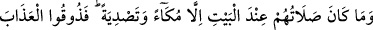
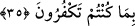
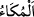
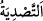

ifadesiyle yokluk kastedilebildiği gibi “onların çoğu” ifadesiyle de hepsinin
kastedildiği de söylenmiştir.
et-Te’vîlâtü’n-Necmiyye’de şöyle denilmiştir: “Onun velîleri sadece sakınanlardır.”
Burada velînin Allah ile olup mâsivâdan sakınan kimse olduğuna işaret vardır. “Fakat
onların çoğu bilmez”. Yani evliyanın çoğu kendilerinin ehl-i velâyet olduğunu bilmez.
Yine burada bir kısım velîlerin kendilerinin veli olduklarını bilmelerinin mümkün
olduğuna işaret etmektedir. Fakat velîlerden çokları, kendilerinin evliyâullah
olduklarını bilmez.
35. Onların Beyt yanındaki duaları da ıslık çalmak ve el çırpmaktan başka bir şey
değildir. İnkar ettiğinizden ötürü şimdi azabı tadın!
“Onların” müşriklerin “Beyt” Beytullah/Allah’ın evi olan Kâbe “yanındaki duaları
da ıslık çalmak ve el çırpmaktan başka bir şey değildir.”
Haddâdî der ki: “__WORD__”, Hicaz bölgesinde bulunan ve ıslık çalar gibi öten beyaz bir
kuştur. Çıkardığı sese göre ona bu isim verilmiştir.
“__WORD__” ise iki eli birbirine vurunca çıkan sestir. Tasdiyenin aslı sadâ yani ses
çıkarmak demektir. Sadâ ise boş ve dağlık bir yerde kayalara çarpan sesin aksine
verilen isimdir. Müşrikler Beytullah’ın yanında dua ve tesbih etmek yerine ıslık çalarak
ve el çırparak Allah’a yaklaşmak istiyorlar ve bunları bir çeşit ibadet kabul ediyorlardı.
İbn Abbas (r.anhümâ)’nın şöyle dediği rivayet edilir: “Kureyşliler, erkek ve kadın
çıplak halde ıslık çalıp el çırparak Kâbe’yi tavaf ediyordu.”
Burada bu hususun zikredilmesi, müşriklerin azabı hak ettiklerini ve Mescid-i
Haram’ın velâyetine lâyık olmadıklarını teyid içindir. Çünkü Mescid-i Haram’ın
velâyeti, bu şekilde dua edip ibadet yapanlara lâyık olmaz.
Mukâtil demiştir ki: “Rasûlullah (s.a.v.), Mescid-i Haram’da namaz kıldığı zaman
Abdüddâroğulları’ndan iki adam sağından, iki adam da solundan kalkar mükâ’ kuşu gibi
ıslık çalar, el çırpar, böylece Nebî (a.s.)’ın namazını ve kırâetini karıştırmak isterlerdi.
Aynı şeyi Peygamberimiz’e inanan müminlere de yaparlardı. Kendilerinin de böylelikle
namaz kıldıklarını sanırlardı. Bu takdire göre âyette geçen namazdan maksad, Allah
tarafından emredilen namazdır.
Î’tikad ve amel bakımından “inkar ettiğinizden ötürü şimdi azabı” Bedir günü
öldürülme ve esir edilme azaplarını “tadın!” Bu ifadeyle kıyamet günü onlara: “Şimdi
azâbı tadın.” denilmesinin kastedildiği de söylenmiştir.
Şu halde küfür ve masiyet, azaba uğramaya sebeptir. Tevbe ve istiğfar ise Vehhâb olan
Allah’ın rahmetine kavuşmaya vesiledir. Tevbe, günahların sabunudur. Tevbe ve